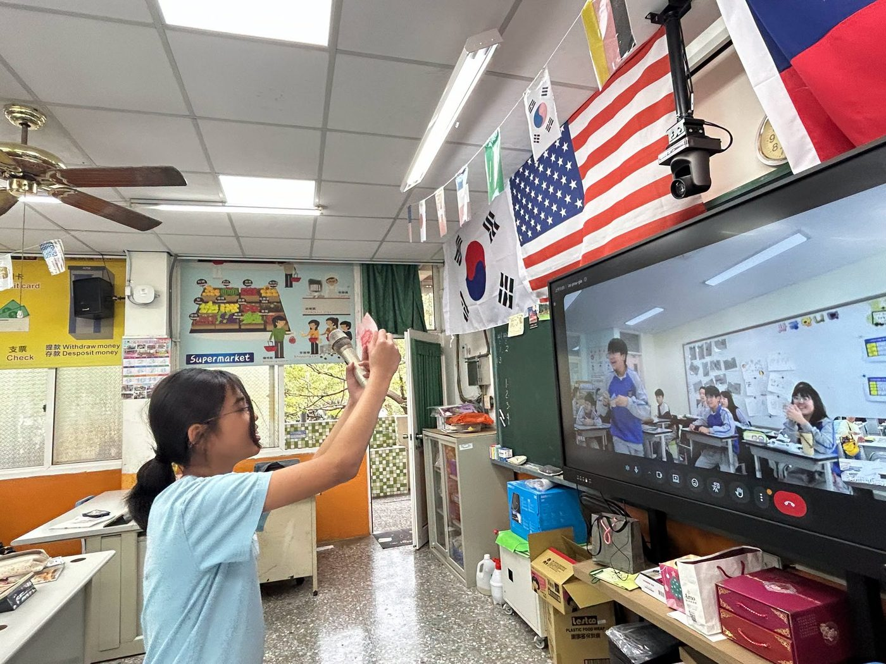
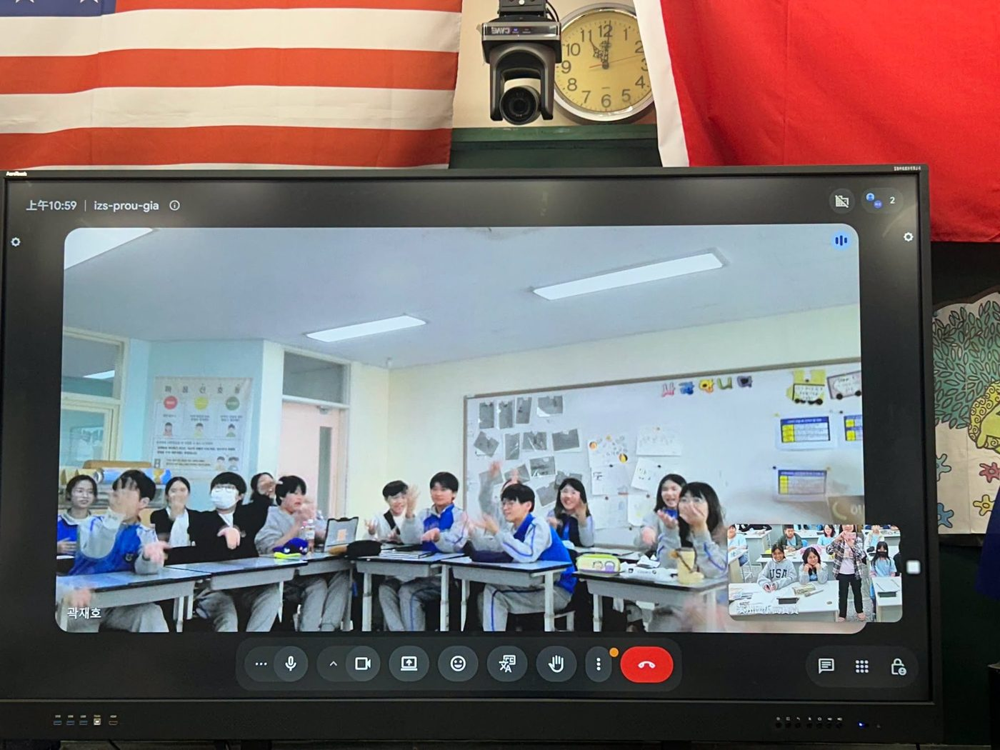
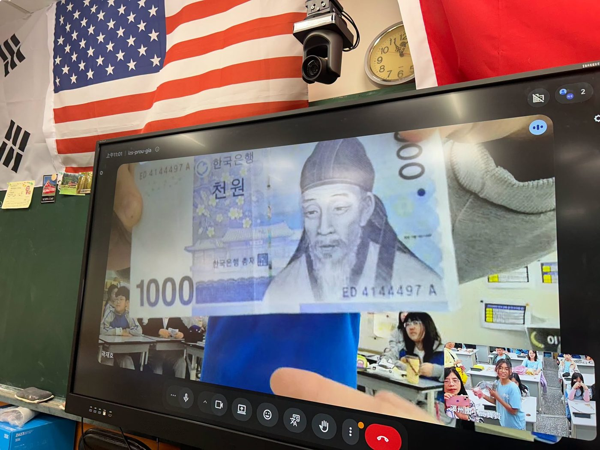
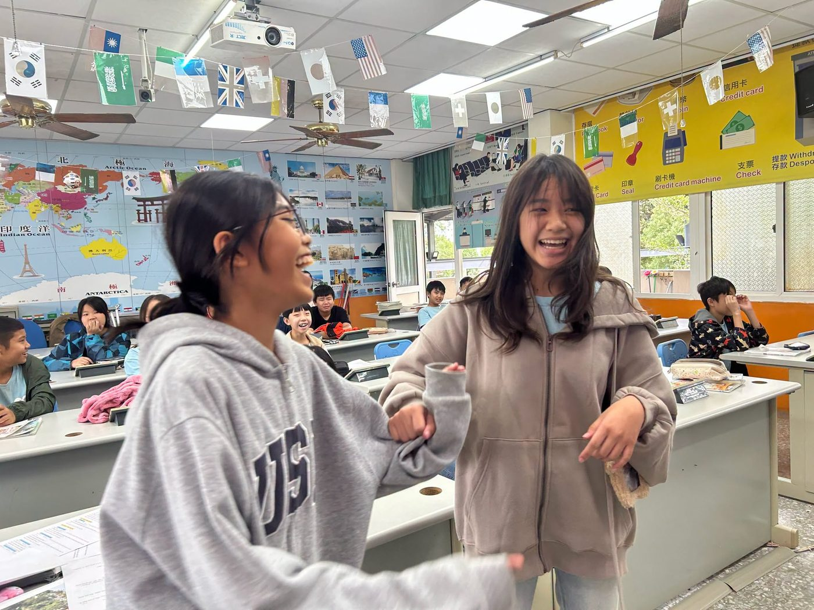

On November 10, Sijhou Elementary held a surprise-filled online exchange with the elementary school affiliated with Seoul National University of Education in Korea. Through a screen, children from two countries reached across borders and languages and began an unforgettable conversation about culture.

The Korean students opened with a lively, rhythmic traditional percussion performance, and the beat of the drums warmed up the room right away! Next, the two sides took turns introducing famous foods and well-known landmarks from their countries, giving everyone a window into a different way of life.

Then came question time, and the children's curiosity just would not stop! "What's the weather like in Korea right now?" "Which K-pop songs do you like?" "What do Korean won and Taiwan dollars look like?" Every question was a chance to explore.

When the talk turned to K-pop, the exchange hit an unexpected high point: students on both sides jumped up and danced to K-pop together across the screen. Music and dance instantly became a shared language, adding even more energy to the afternoon.
🤣 "Six-Seven!" — a language everyone knows
The biggest surprise came at the very end. A Sijhou student asked, "Do you know Six-Seven?" — and the Korean students answered right away! This internet phrase, a favorite of kids everywhere, had already crossed borders and become something both sides understood.
Together they shouted "Six-Seven!" with the familiar hand gesture, and laughter and cheers filled both classrooms — the happiest possible ending to the exchange.

For Sijhou's children, this was more than a video lesson with another country. It was a valuable chance to speak up bravely, explore on their own and build an international friendship.
Thank you to English teacher Kao Pao-kuei and foreign teacher Ana for making this international exchange possible.
跨越國界的友誼，從溪州連結韓國！
11月10日，溪州國小與韓國「首爾教育大學附屬小學」展開一場充滿驚喜的線上國際交流，讓兩地的孩子透過螢幕，跨越國界與語言的距離，展開一段難忘的文化對話。
活動一開始，韓國學生帶來充滿節奏與活力的傳統打擊樂表演，熱鬧的鼓聲瞬間炒熱氣氛！接著，雙方輪流介紹各自國家的特色美食與知名景點，透過孩子們的分享，讓彼此看見不同文化的風貌，也拓展了認識世界的視野。
進入交流提問時間，孩子們的好奇心完全停不下來！從「韓國現在的天氣如何？」、「喜歡哪些K-pop歌曲？」到「韓幣和臺幣長什麼樣子？」每個問題都充滿探索的樂趣。
聊到K-pop時，現場更意外掀起一波小高潮！臺韓雙方的孩子即興秀出舞步，隔著螢幕跳起K-pop，音樂與舞蹈瞬間成為彼此共同的語言，也讓交流多了幾分青春與活力。
🤣「Six-Seven！」竟然成了跨國共同語言！
最令人驚喜的橋段，出現在交流尾聲！
當溪州的孩子拋出一句：「Do you know Six-Seven？」沒想到韓國學生立刻熱烈回應！原來，這個在孩子之間流行的網路用語，早已跨越國界，成為彼此都能心領神會的共同話題。
雙方興奮地一起喊出「Six-Seven！」，搭配熟悉的手勢，笑聲與歡呼聲此起彼落，也為這場交流留下最歡樂的結尾。
對溪州的孩子而言，這不只是一堂跨國視訊課，更是一次勇敢表達、主動探索與建立國際友誼的珍貴學習經驗。
感謝英專教師高寶貴老師、外師 Ana 協助國際教育交流。